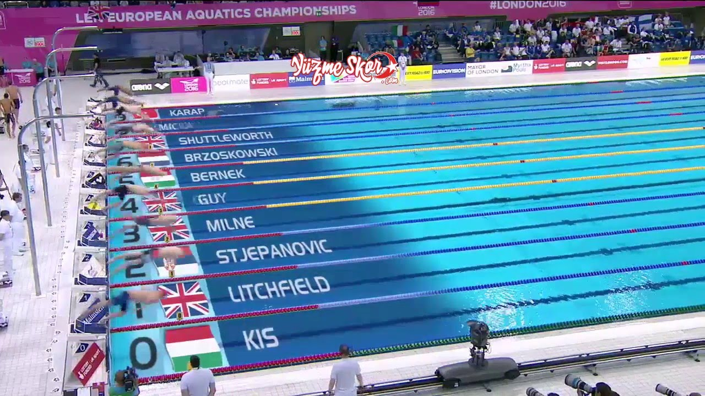
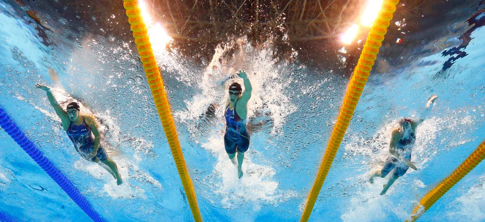
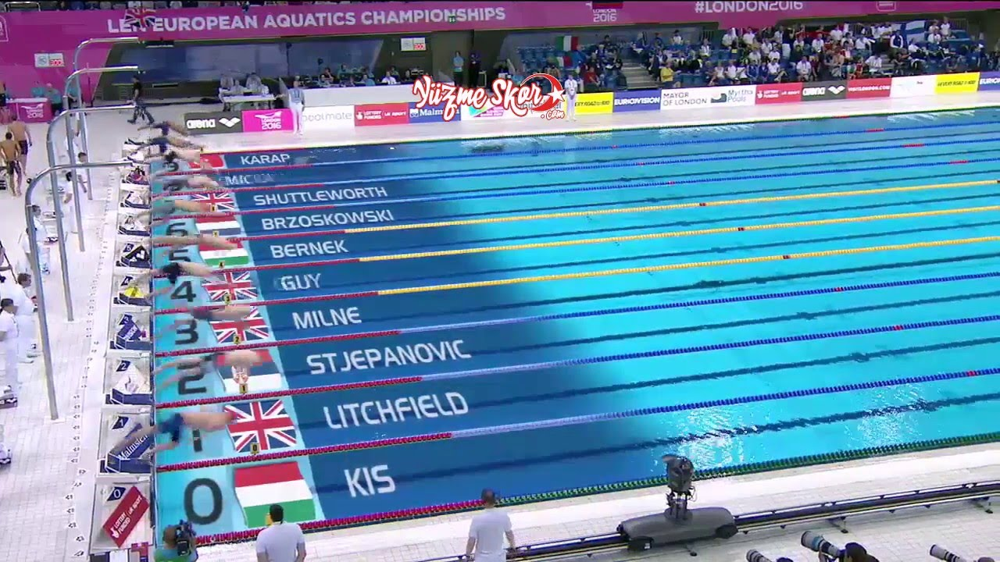
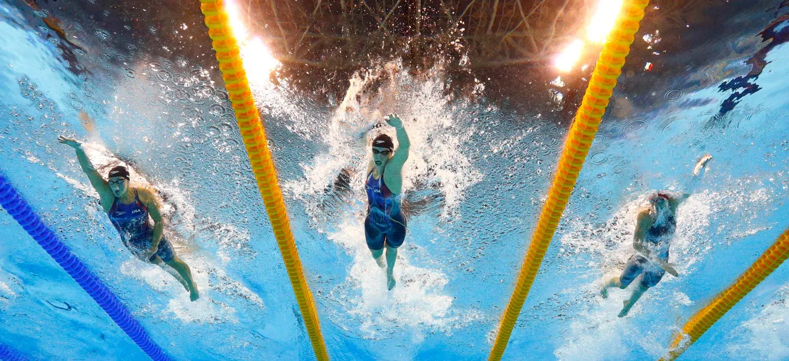

Yüzme, bireyin tüm bedenini kol ve bacak hareketlerinden başka bir unsur kullanmadan su içinden ilerletmesini gerektiren, bireysel veya takımsal düzeyde gerçekleştirilen bir yarış ya da antrenman sporudur. Bu spor, yüzme havuzlarında veya açık suda (ör. deniz ya da göl içinde) icra edilmektedir. Yüzme yarışı Olimpiyat oyunlarındaki en popüler spor türlerinden biridir[1] ve kurbağalama, sırtüstü, kelebekleme, serbest ve karışık olarak isimlendirilen stillerde bireysel düzeyde gerçekleştirilir. Takım müsabakalarında ise, dört yüzücü serbest yahut karışık (dört yüzücünün farklı stillerde sırasıyla sırtüstü, kurbağalama, kelebekleme ve serbest yüzmesi[2]) stillerde yarışabilmektedir.
 


